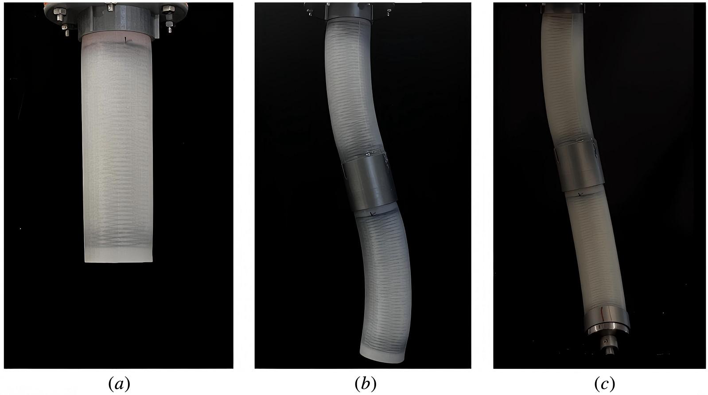
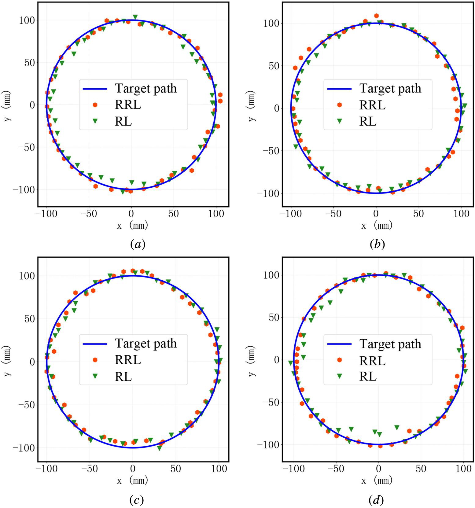

Residual Reinforcement Learning Based on Inverse Kinematic Modeling for Soft Robotic Arm Control


Overview
This work proposed a residual reinforcement learning framework that uses an inverse kinematic model as prior knowledge for soft robotic arm control. Instead of learning the entire control policy from scratch, the reinforcement learning policy learns residual pressure corrections around an inverse-kinematic initial solution.
Method
A piecewise constant curvature-based kinematic model maps pneumatic chamber pressure to end-effector position. The inverse model initializes pressure commands for target positions, while a PPO-based residual policy compensates for modeling errors and unmodeled effects such as payload and gravity.
Results
The inverse-kinematic controller alone produced substantially larger errors, while residual reinforcement learning achieved accurate circular and Viviani trajectory tracking under payloads ranging from 0 g to 300 g.
Publication
J. Liang, G. Lou, F. Zhou, Yumeng Cai, C. Wang, and Y. Zhou, “Residual Reinforcement Learning Based on Inverse Kinematic Modeling for Soft Robotic Arm Control,” ASME Journal of Dynamic Systems, Measurement, and Control , 147(6), 061007, 2025.